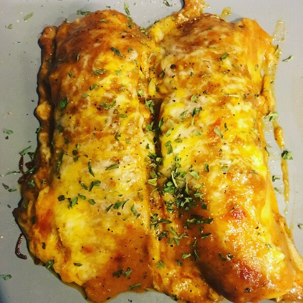

Bacon-Ranch Chicken Enchiladas

Description
Not authentically Mexican in the slightest,
but holy buckets are they good! Great way to use up leftover rotisserie chicken.
Ingredients
- Cooking Spray
- 2 Tablespoons Olive Oil
- 1/4 Cup Chopped Yellow Onion
- 1/2 Leftover Rotisserie Chicken, Chopped
- 2 Tablespoons Roasted Garlic
- 1/2 Teaspoon Salt
- 1/2 Teaspoon Ground Black Pepper
- 1/2Teaspoon Garlic Powder
- 1 Bunch Green Onions, Chopped
- 2 Tablespoons Ranch Dressing
- 2 Tablespoons Sour Cream
- 15 (6 inch) Corn Tortillas, Or More To Taste
- 2 Cups Shredded Cheddar-Monterey Jack Cheese Blend
- 1 Cup Mild Enchilada Sauce
Steps
-
Preheat the oven to 450 degrees F (230 degrees C).
Spray a 9x12-inch brownie pan with cooking spray.
-
Heat olive oil in a large skillet over medium heat.
Add onion and cook until soft, about 5 minutes.
Stir in chicken, bacon, and roasted garlic.
Season with salt, pepper, and garlic powder.
Stir in green onions.
-
Mix ranch dressing and sour cream together in a small bowl.
Remove chicken mixture from heat and stir just enough ranch
mixture into the skillet to barely coat chicken.
-
Hold 1 tortilla and spoon 2 tablespoons chicken mixture across the middle.
Sprinkle 1 tablespoon Cheddar-Monterey Jack cheese blend over chicken and
roll tortilla up. Place filled tortilla, seam-side down, against the short
end of the pan so it does not unroll. Repeat with remaining tortillas and
filling until pan is jammed full of enchiladas.
-
Pour enchilada sauce on top of filled tortillas to cover without drowning
them. Sprinkle remaining Cheddar-Monterey Jack cheese blend generously on
top of everything.
-
Bake in the preheated oven until bubbly on top, about 15 minutes.